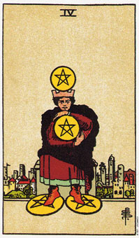

【关键词】 获利 控制 占有 遗产
图中的男人，从衣着上看，地位显赫。他头顶一枚金币，脚踩两枚金币，怀抱一枚金币，他屁股下坐的箱子里，说不定还有多少枚金币。从表情上看，他很紧张，很明显，他怕失去任何一丁点财产。从物质面上而言他是有富的，但他孤零零的远离于城堡里的人们之外，可以看出，在精神层面上，他是一贫如洗的。星币四经常代表物质生活上的充足与稳定，以及精神层面上的空虚。
推测：星币四在实际推测中，往往代表指控，代表那些紧紧抓住物质资产不放的人(也包括精神层面上的东西)。若是情侣，会嫉妒心很重，爱吃醋，若是老板，肯定是处处克扣工资的小气鬼。
星币四意味节省你的金钱或经历的一段时间。
星币四是在描述，一个有钱心里面才会觉得踏实的人。塔罗牌所有的4都有一个意义：巩固。而星币的4所指的就是财务上的巩固：换句话说，它是指使财务状况坚固或实现的行动。
这张牌上的人都是独处的，不过为了金钱或一些有形的事物的缘故，他必须要小心不要让自己和其他人疏离了。对安定和安全的强烈需求，使他难以离开金钱，投入生活。
星币四意味占星学上的金牛座，特别是和教皇或星币国王一起出现的时候。属金牛座者的部分人生课题是，认清在人与财富的关系中，人真正的价值是什么。
就做生意的角度来看，它代表一种稳固而有力的状态。它可能暗示这财务大体上稳定。在协调谈判的情况中，4暗示这个人对于新意见或改变的接收度不高。
大体上的意义
星币四意味你正在节约金钱、节省精力，或是节制。在有关旅行的问题当中，这张牌暗示对某个假期，你会尽可能量入为出。
它也可能意味经由节约金钱、偿还债务及量入为出，而是你的财务状况日趋稳定。或许你在设计增加收入或减少指出，以确保自己进来的钱比出去的多。4表示你正在进行其中一项，或两者同时进行。
在最近的一次分析中，一位女士问我，在目前的投资到期之后，她是否应该再把她的钱投入某项生意。这张正立的4暗示着，一项稳固的投资是可以继续下去的。
正位含义：
1.吝啬鬼，多指有钱人一些可笑的节约措施。
2.生活中精打细算，多指贫穷者。
3.有遗产方面的问题，或预示某位亲属要亡故，而财产续承不会太顺利。
4.追求物质财富很执著。
逆位含义：
1.入不敷出，或坐吃山空。
2.奢侈无度的人，生活开支没有计划性，缺乏自控能力。
3.金钱运势很差。
4.因物质欲望过度膨胀而导致失败。
两性关系上的意义
星币四可能暗示，伴侣中的一人对物质的重视更甚于关系本身。
它也可能是在暗示嫉妒和占有欲，因为想要掌握住有形的东西，而不先去掌握住对方的兴趣和心理的话，这是很难办得到的。伴侣中的一人可能会觉得，他的另一半是属于他的，他的东西也顺理成章的属于他。
这张牌显示，在你付出时，你已经清楚自己想得到的是什么;这就表示说，它代表利益的交换，而不是馈赠。这张牌也可以意味着自私，以及如果没有办法得到对等的回馈，获取会更多的话，那么要他付出是很困难的。
倒立的星币四
由财务的角度来看，星币四的倒立代表金钱有你的指尖滑落。而这有可能是故意的，例如，当你在度假时就有可能会花掉比平时多的钱。
星币四的倒立可能意味着慷慨和自由。在两性关系的分析中，它暗示你给自己充分的自由，对伴侣也不加设限。有时候他也可能表示，你付出的比你所得到的还要多。
星币四的倒立也可能是在说，你没有能力建构你的生活、工作或两性关系。它正立时暗示着稳定;而倒立时，则可能代表这不稳定或没有改变的自由。
假设这张牌出现在有关旅行或一壮大买卖中时，而不是结果或答案，那可能暗示者你并没有朝着目标在节约。假如他使这个问题的答案或结果，那它指的就是花钱，或实际的买卖正在进行中。